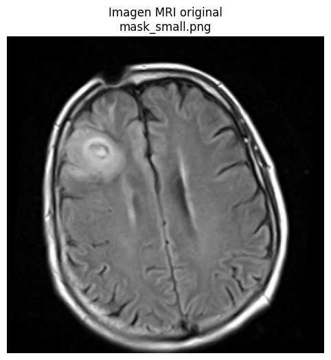
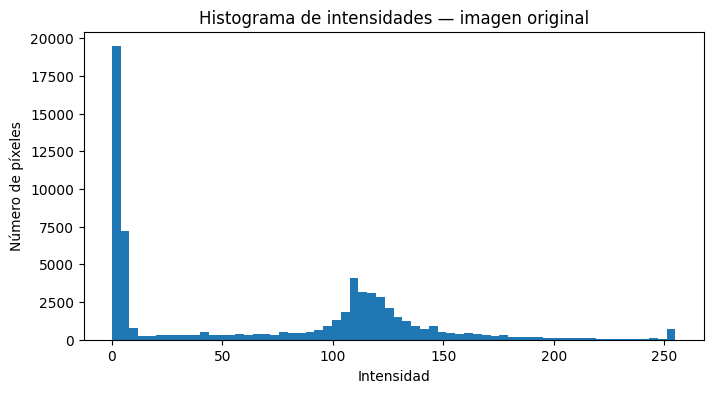
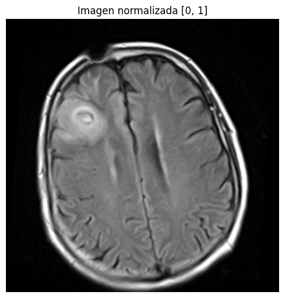
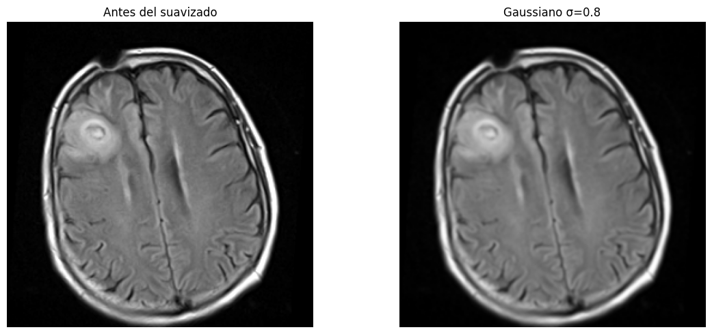
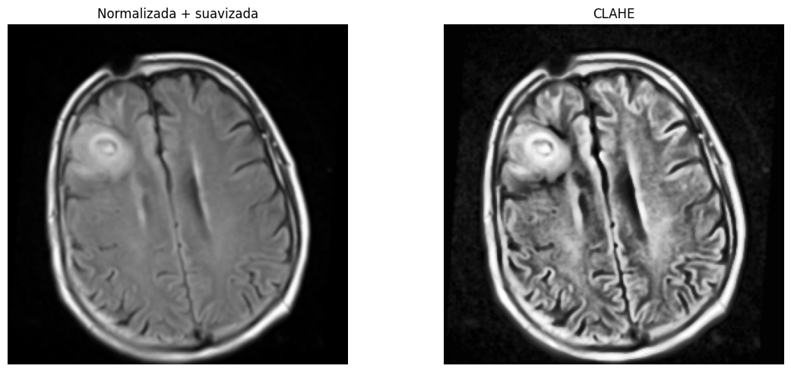
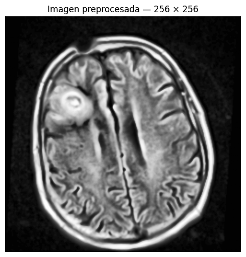
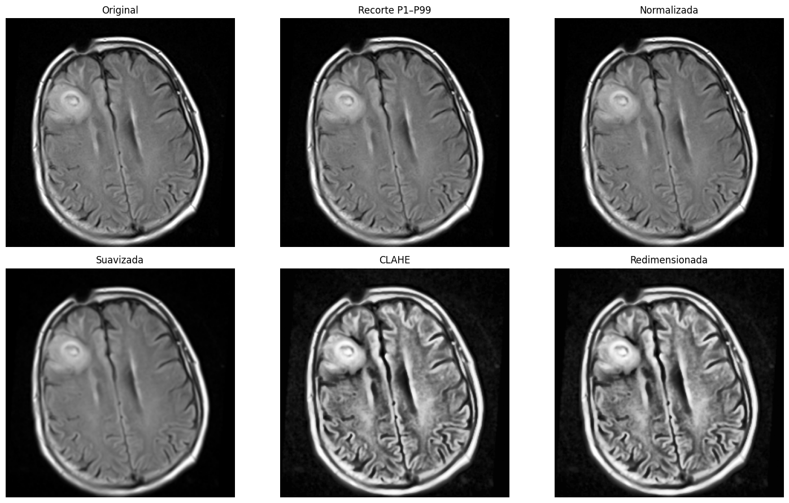
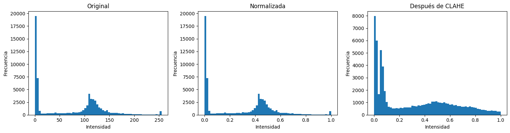
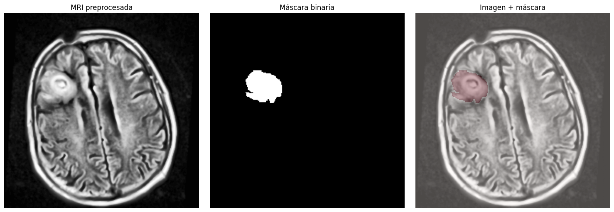

from pathlib import Path
import numpy as np
import matplotlib.pyplot as plt
from PIL import Image
from skimage import exposure, filters, transform
plt.rcParams["figure.figsize"] = (8, 6)
plt.rcParams["image.cmap"] = "gray"Pipeline básico de preprocesamiento de imágenes médicas
Ejemplo didáctico con MRI FLAIR del teaching_dataset
Este cuaderno muestra un pipeline reproducible y deliberadamente sencillo para una imagen de resonancia magnética (MRI) del dataset de enseñanza.
La idea central es separar dos conceptos:
- La imagen adquirida representa una propiedad física medida por el sistema.
- El preprocesamiento transforma la representación digital para facilitar visualización o análisis posterior.
Importante: este pipeline es educativo. No constituye un protocolo clínico ni debe asumirse como óptimo para todos los estudios de MRI.
Etapas
Imagen original → recorte robusto de intensidades → normalización → reducción suave de ruido → mejora de contraste local → redimensionamiento
También se muestra cómo transformar una máscara de segmentación sin alterar sus etiquetas.
0. Dependencias
El cuaderno utiliza:
numpymatplotlibPillowscikit-image
Con uv, una opción es instalar:
uv add numpy matplotlib pillow scikit-image jupyterSe asume que el cuaderno está ubicado en el mismo directorio que:
teaching_dataset/
├── mri/
│ ├── images/
│ ├── masks/
│ └── overlays/
└── ...1. Localizar el dataset
El código busca automáticamente teaching_dataset en el directorio actual y en algunos niveles superiores.
Esto evita codificar una ruta absoluta y facilita mover el proyecto entre computadores.
def find_teaching_dataset(start: Path = Path.cwd()) -> Path:
candidates = [
start / "teaching_dataset",
start.parent / "teaching_dataset",
start.parent.parent / "teaching_dataset",
start / "data" / "teaching",
start.parent / "data" / "teaching",
]
for candidate in candidates:
if (candidate / "mri" / "images").exists():
return candidate.resolve()
raise FileNotFoundError(
"No se encontró teaching_dataset. "
"Ubique el cuaderno junto a la carpeta teaching_dataset "
"o ajuste manualmente DATASET_ROOT."
)
DATASET_ROOT = Path(
"/home/sylph/bioforja/bioforja-projects/pablocaicedor.github.io/presentaciones/TALLERES/teaching_dataset/"
)
MRI_IMAGES = DATASET_ROOT / "mri" / "images"
MRI_MASKS = DATASET_ROOT / "mri" / "masks"
print("Dataset:", DATASET_ROOT)
print("MRI images:", MRI_IMAGES)Dataset: /home/sylph/bioforja/bioforja-projects/pablocaicedor.github.io/presentaciones/TALLERES/teaching_dataset
MRI images: /home/sylph/bioforja/bioforja-projects/pablocaicedor.github.io/presentaciones/TALLERES/teaching_dataset/mri/images2. Seleccionar una imagen MRI
El dataset de enseñanza contiene imágenes FLAIR derivadas del conjunto MRI seleccionado previamente.
Para mantener el ejemplo reproducible:
- se listan los archivos,
- se ordenan alfabéticamente,
- se selecciona la imagen central de la lista.
Puede cambiar image_path manualmente para trabajar con otra imagen.
image_files = sorted(p for p in MRI_IMAGES.glob("*.png") if p.is_file())
if not image_files:
raise FileNotFoundError(f"No hay PNG en {MRI_IMAGES}")
print(f"Número de imágenes disponibles: {len(image_files)}")
for p in image_files:
print(" -", p.name)
image_path = image_files[len(image_files) // 2]
print("\nImagen seleccionada:", image_path.name)Número de imágenes disponibles: 4
- mask_large.png
- mask_medium.png
- mask_small.png
- slice_without_visible_mask.png
Imagen seleccionada: mask_small.png3. Cargar la imagen
Se convierte explícitamente a escala de grises y posteriormente a float32.
Trabajar en punto flotante evita errores por saturación o truncamiento durante operaciones matemáticas.
img_u8 = np.array(Image.open(image_path).convert("L"))
img = img_u8.astype(np.float32)
print("Shape:", img.shape)
print("dtype original:", img_u8.dtype)
print("dtype de trabajo:", img.dtype)
print("mínimo:", img.min())
print("máximo:", img.max())
plt.imshow(img)
plt.title(f"Imagen MRI original\n{image_path.name}")
plt.axis("off")
plt.show()Shape: (256, 256)
dtype original: uint8
dtype de trabajo: float32
mínimo: 0.0
máximo: 255.0
4. Inspeccionar la distribución de intensidades
Antes de modificar una imagen conviene observar su histograma.
En MRI, la intensidad no tiene una escala física universal equivalente a las unidades Hounsfield de CT. Por ello, operaciones de normalización suelen ser dependientes del estudio, secuencia y objetivo analítico.
fig, ax = plt.subplots(figsize=(8, 4))
ax.hist(img.ravel(), bins=64)
ax.set_title("Histograma de intensidades — imagen original")
ax.set_xlabel("Intensidad")
ax.set_ylabel("Número de píxeles")
plt.show()
5. Recorte robusto de intensidades
Los valores extremos pueden dominar una normalización min–max.
Una estrategia didáctica simple es usar percentiles:
- límite inferior: percentil 1
- límite superior: percentil 99
Los valores fuera de ese intervalo se recortan.
Esto no elimina anatomía de forma explícita, pero sí modifica la representación de intensidades, por lo que los percentiles deben documentarse.
P_LOW = 1.0
P_HIGH = 99.0
low, high = np.percentile(img, [P_LOW, P_HIGH])
img_clipped = np.clip(img, low, high)
print(f"Percentil {P_LOW:.1f}: {low:.3f}")
print(f"Percentil {P_HIGH:.1f}: {high:.3f}")
fig, axes = plt.subplots(1, 2, figsize=(12, 5))
axes[0].imshow(img)
axes[0].set_title("Original")
axes[0].axis("off")
axes[1].imshow(img_clipped)
axes[1].set_title("Recorte P1–P99")
axes[1].axis("off")
plt.tight_layout()
plt.show()Percentil 1.0: 0.000
Percentil 99.0: 255.0006. Normalización a [0, 1]
La normalización facilita:
- comparar imágenes en una escala numérica común,
- alimentar algoritmos de procesamiento,
- evitar depender de la profundidad de bits del archivo.
La transformación aplicada es:
[ I*n = ]
den = img_clipped.max() - img_clipped.min()
if den == 0:
raise ValueError("La imagen no tiene rango dinámico.")
img_norm = (img_clipped - img_clipped.min()) / den
img_norm = img_norm.astype(np.float32)
print("mínimo normalizado:", img_norm.min())
print("máximo normalizado:", img_norm.max())
plt.imshow(img_norm, vmin=0, vmax=1)
plt.title("Imagen normalizada [0, 1]")
plt.axis("off")
plt.show()mínimo normalizado: 0.0
máximo normalizado: 1.0
7. Reducción suave de ruido
Se aplica un filtro Gaussiano pequeño.
El objetivo no es borrar textura, sino ilustrar el compromiso fundamental:
Reducir ruido casi siempre implica perder parte del detalle espacial.
Por eso se usa un sigma bajo.
GAUSSIAN_SIGMA = 0.8
img_denoised = filters.gaussian(
img_norm, sigma=GAUSSIAN_SIGMA, preserve_range=True
).astype(np.float32)
fig, axes = plt.subplots(1, 2, figsize=(12, 5))
axes[0].imshow(img_norm, vmin=0, vmax=1)
axes[0].set_title("Antes del suavizado")
axes[0].axis("off")
axes[1].imshow(img_denoised, vmin=0, vmax=1)
axes[1].set_title(f"Gaussiano σ={GAUSSIAN_SIGMA}")
axes[1].axis("off")
plt.tight_layout()
plt.show()
8. Mejora de contraste local con CLAHE
CLAHE (Contrast Limited Adaptive Histogram Equalization) mejora el contraste por regiones, limitando la amplificación excesiva.
Es útil para demostrar que:
- mejor contraste visual no significa automáticamente mejor información clínica;
- una transformación puede facilitar la visualización y, al mismo tiempo, modificar la distribución original de intensidades.
Por eso siempre se conserva la imagen sin procesar.
CLAHE_CLIP_LIMIT = 0.02
img_clahe = exposure.equalize_adapthist(
img_denoised, clip_limit=CLAHE_CLIP_LIMIT
).astype(np.float32)
fig, axes = plt.subplots(1, 2, figsize=(12, 5))
axes[0].imshow(img_denoised, vmin=0, vmax=1)
axes[0].set_title("Normalizada + suavizada")
axes[0].axis("off")
axes[1].imshow(img_clahe, vmin=0, vmax=1)
axes[1].set_title("CLAHE")
axes[1].axis("off")
plt.tight_layout()
plt.show()
9. Redimensionamiento
Muchos modelos de aprendizaje automático necesitan imágenes con dimensiones uniformes.
Aquí se usa 256 × 256 únicamente como tamaño didáctico.
Para imágenes se utiliza interpolación continua y anti-aliasing.
TARGET_SHAPE = (256, 256)
img_resized = transform.resize(
img_clahe, TARGET_SHAPE, order=1, anti_aliasing=True, preserve_range=True
).astype(np.float32)
print("Shape original:", img.shape)
print("Shape final:", img_resized.shape)
plt.imshow(img_resized, vmin=0, vmax=1)
plt.title("Imagen preprocesada — 256 × 256")
plt.axis("off")
plt.show()Shape original: (256, 256)
Shape final: (256, 256)
10. Ver el pipeline completo
La comparación secuencial permite discutir qué aporta y qué sacrifica cada transformación.
stages = [
("Original", img),
("Recorte P1–P99", img_clipped),
("Normalizada", img_norm),
("Suavizada", img_denoised),
("CLAHE", img_clahe),
("Redimensionada", img_resized),
]
fig, axes = plt.subplots(2, 3, figsize=(15, 9))
for ax, (title, stage) in zip(axes.ravel(), stages):
ax.imshow(stage)
ax.set_title(title)
ax.axis("off")
plt.tight_layout()
plt.show()
11. Comparación de histogramas
El histograma permite comprobar que el preprocesamiento no es una operación neutra: cambia explícitamente la representación numérica.
fig, axes = plt.subplots(1, 3, figsize=(15, 4))
axes[0].hist(img.ravel(), bins=64)
axes[0].set_title("Original")
axes[1].hist(img_norm.ravel(), bins=64)
axes[1].set_title("Normalizada")
axes[2].hist(img_clahe.ravel(), bins=64)
axes[2].set_title("Después de CLAHE")
for ax in axes:
ax.set_xlabel("Intensidad")
ax.set_ylabel("Frecuencia")
plt.tight_layout()
plt.show()
12. Si existe una máscara: conservar sus etiquetas
Una máscara de segmentación no debe procesarse como una imagen de intensidad.
En particular:
- no se aplica CLAHE,
- no se suaviza,
- al redimensionar se usa vecino más cercano (
order=0).
Esto evita crear etiquetas intermedias inexistentes.
def find_matching_mask(image_path: Path, mask_dir: Path):
# Primero intenta coincidencias por nombre base.
candidates = [
mask_dir / image_path.name,
mask_dir / image_path.name.replace(".png", "_mask.png"),
mask_dir / image_path.name.replace("_flair.png", "_mask.png"),
mask_dir / image_path.name.replace("_image.png", "_mask.png"),
]
for candidate in candidates:
if candidate.exists():
return candidate
# Fallback: buscar términos comunes del nombre.
stem_tokens = [t for t in image_path.stem.split("_") if t not in {"image", "flair"}]
for p in sorted(mask_dir.glob("*.png")):
if stem_tokens and all(token in p.stem for token in stem_tokens[:2]):
return p
return None
mask_path = find_matching_mask(image_path, MRI_MASKS)
if mask_path is None:
print("No se encontró una máscara correspondiente. Se omite esta sección.")
else:
mask = np.array(Image.open(mask_path).convert("L")) > 0
mask_resized = (
transform.resize(
mask.astype(np.uint8),
TARGET_SHAPE,
order=0,
anti_aliasing=False,
preserve_range=True,
)
> 0
)
print("Máscara:", mask_path.name)
print("Valores originales:", np.unique(mask))
print("Valores después de resize:", np.unique(mask_resized))
fig, axes = plt.subplots(1, 3, figsize=(15, 5))
axes[0].imshow(img_resized, vmin=0, vmax=1)
axes[0].set_title("MRI preprocesada")
axes[0].axis("off")
axes[1].imshow(mask_resized)
axes[1].set_title("Máscara binaria")
axes[1].axis("off")
axes[2].imshow(img_resized, vmin=0, vmax=1)
axes[2].imshow(mask_resized, alpha=0.30, cmap="Reds")
axes[2].set_title("Imagen + máscara")
axes[2].axis("off")
plt.tight_layout()
plt.show()Máscara: mask_small_mask.png
Valores originales: [False True]
Valores después de resize: [False True]
13. Exportar el resultado
El resultado derivado se guarda en una carpeta separada.
La imagen original del teaching_dataset no se modifica.
OUTPUT_DIR = Path.cwd() / "outputs"
OUTPUT_DIR.mkdir(parents=True, exist_ok=True)
output_image = OUTPUT_DIR / "mri_preprocessed.png"
img_export = np.clip(img_resized * 255.0, 0, 255).astype(np.uint8)
Image.fromarray(img_export).save(output_image)
print("Imagen guardada en:")
print(output_image.resolve())Imagen guardada en:
/home/sylph/bioforja/bioforja-projects/pablocaicedor.github.io/codigo/talleres/outputs/mri_preprocessed.png14. Resumen conceptual
Este ejemplo utilizó una sola modalidad: MRI FLAIR.
El pipeline fue:
imagen original
│
▼
inspección
│
▼
recorte robusto P1–P99
│
▼
normalización [0,1]
│
▼
suavizado Gaussiano
│
▼
CLAHE
│
▼
redimensionamiento
│
▼
imagen preparada para análisisPreguntas para discusión
- ¿Qué información cambia cuando se normalizan las intensidades?
- ¿Por qué el suavizado puede ser beneficioso y perjudicial al mismo tiempo?
- ¿Por qué una máscara necesita interpolación diferente?
- ¿Sería correcto aplicar exactamente este pipeline a una radiografía, una CT o un ultrasonido?
- ¿Qué transformaciones deberían definirse a partir de la tarea clínica o del modelo posterior?
Idea clave
Preprocesar no significa “mejorar” una imagen de manera universal. Significa transformarla de forma controlada y documentada para una tarea específica.
Referencia conceptual de la clase
El enfoque sigue la idea de estudiar imágenes médicas como señales digitales producidas por sistemas de adquisición: una imagen representa una propiedad física medida y su procesamiento debe interpretarse dentro de la modalidad y del objetivo de análisis.
Para la clase, esta distinción es más importante que memorizar una secuencia fija de filtros.